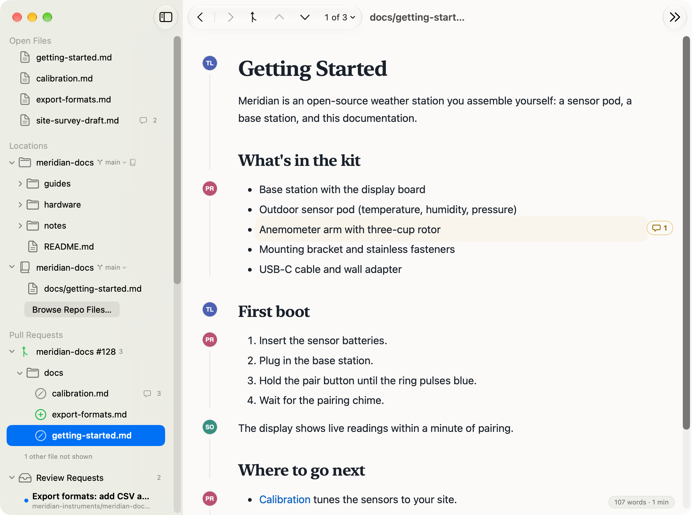
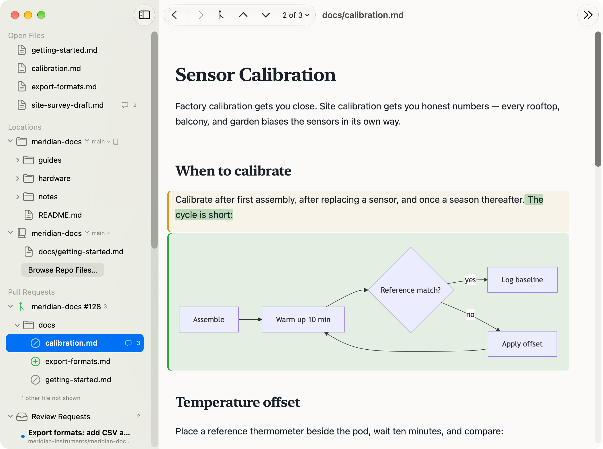
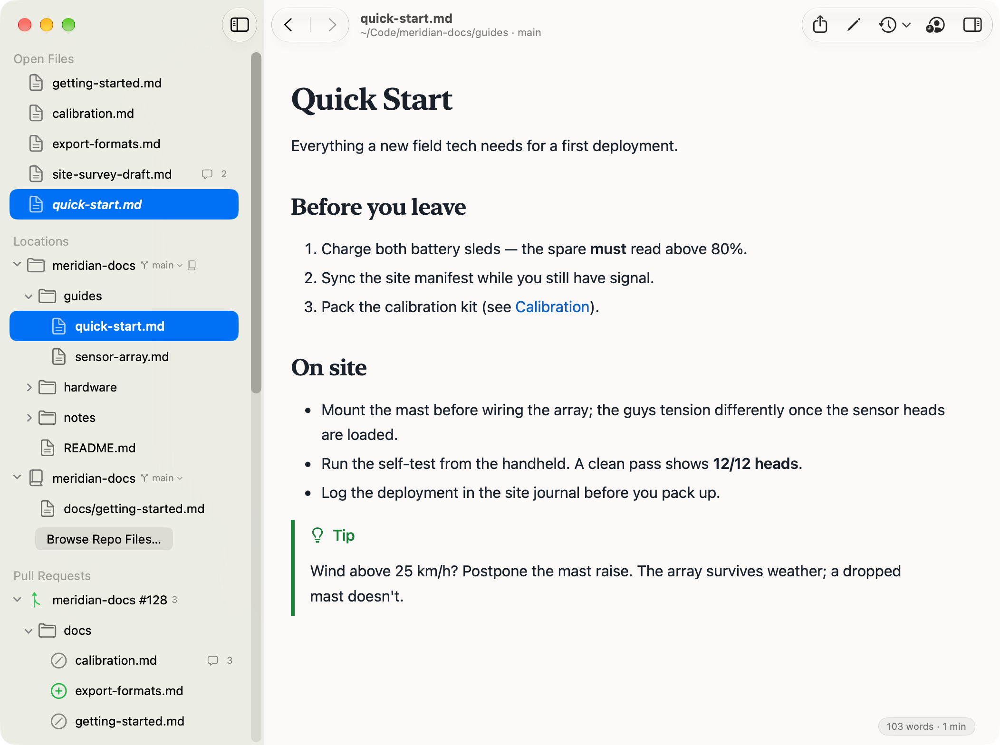
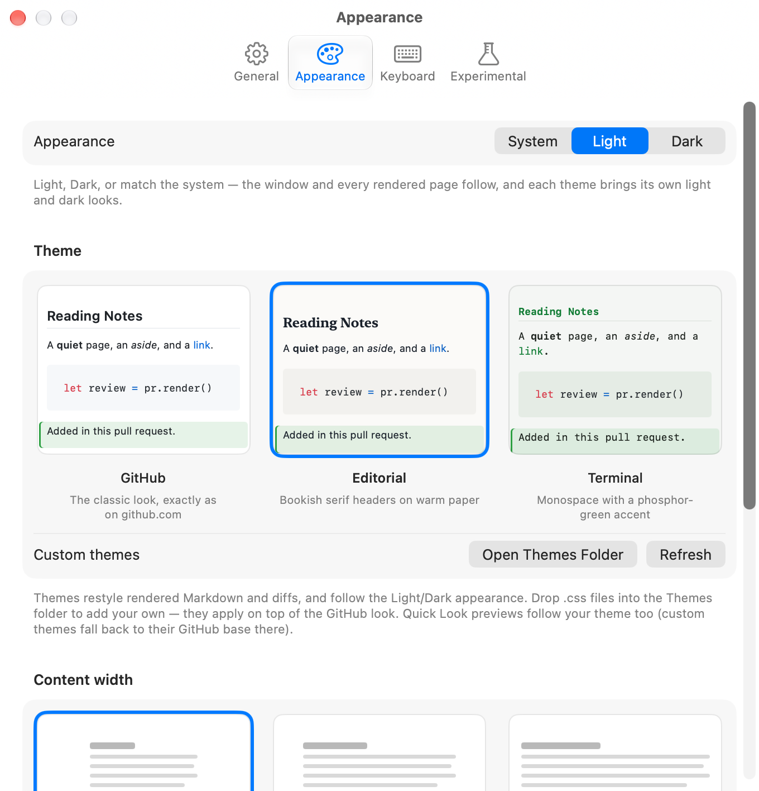

Quick Look
Press space on any Markdown file in Finder and see it rendered PullMark-style, before you ever open an app.
a native macOS app · free & open source · signed & notarized
PullMark renders your local Markdown the way readers will see it — and shows
documentation-heavy GitHub pull requests as rendered diffs, with just the
changed words highlighted. Comment, suggest, and submit your review without ever squinting
at a wall of +/− prose.
$ brew tap jedijashwa/tap
$ brew trust jedijashwa/tap
$ brew install --cask pullmarkGrab PullMark-x.y.z.dmg from the
latest release
and drag PullMark to Applications.
Either way, PullMark checks for updates and installs them with one click.
macOS 13+ · Developer ID signed, notarized by Apple · or build from source

why
More and more of what flows through pull requests isn't code — it's documents: design docs, decision records, agent and skill definitions, runbooks, READMEs. Reviewing those as source lines is the wrong altitude. A document is meant to be read the way readers will see it — tables as tables, diagrams as diagrams. A source diff of prose actively hides what changed.
PullMark splits old and new into blocks, aligns them, and renders the result with changed blocks marked in place. When an edit is small, you get a word-level diff inside formatted text — a one-word edit shows as one highlighted word. And because every block keeps its original line numbers, review comments land exactly where GitHub expects them.
“The reading room next to the workshop.”
PullMark is deliberately not a full review client. It shows only the Markdown files in a PR — for the code parts of a change, your usual review tools remain the right place.
reviewing
Switch between inline and side-by-side layouts, drop to the raw Source Diff, or preview the final Result — all from the toolbar. YAML front matter renders as a quiet metadata table, not a wall of bold prose — so config-heavy docs diff cleanly too. Existing review threads appear under the blocks they discuss. Hover any block, click the bubble, and reply — or start something new. Open PRs are checked every minute; if the branch moves, one click refreshes and your drafts survive.

github/docs: the old front matter is a tidy
metadata table — and the rendered diff makes it obvious the patch accidentally broke it.Posts a single review comment immediately, anchored to the exact lines behind the rendered block.
Collects drafts locally. Submit them together — Comment, Approve, or Request Changes — or save a pending review to finish on github.com.
Pre-fills a ```suggestion block with the targeted lines, so the author
applies your edit in one click.
reading
Open files or whole folders; everything re-renders the moment it changes on disk. Relative images resolve, links to other Markdown files open in-app, heading anchors jump within the page — and everything GitHub renders, PullMark renders, verified construct-by-construct in CI.

kitchen-sink.md — the file CI uses to verify every construct.[toc] — $…$ and $$…$$
render through bundled KaTeX, fully offline; a lone [toc] becomes a linked
table of contents..css files into the Themes folder to add your own.
at-home-on-your-mac
Press space on any Markdown file in Finder and see it rendered PullMark-style, before you ever open an app.
pullmark README.md, pullmark ~/notes docs/ — files and
folders open in the running app.
One click in Settings makes double-click in Finder mean rendered, everywhere — and if an upgrade ever drops the binding, PullMark notices and offers it back.
No separate login. PullMark uses gh auth token or your git credential
helper — private and org repos just work.
Fetched PR content lives in ephemeral sessions and bounded memory caches — nothing from GitHub is written to persistent storage.
Swift, zero package dependencies, and a license that stays out of your way. Read the source.
Free, open source, signed and notarized. One tap away.
$ brew tap jedijashwa/tap
$ brew trust jedijashwa/tap
$ brew install --cask pullmarkGrab PullMark-x.y.z.dmg from the
latest release
and drag PullMark to Applications.
Either way, PullMark checks for updates and installs them with one click.